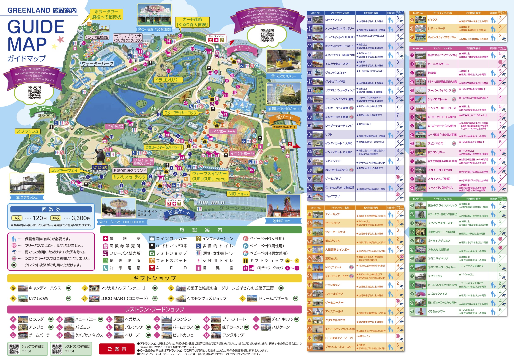

全体情報
方面 長崎・福岡・熊本
期間 令和8年 5月19日（火）〜 5月21日（木） 2泊3日
バス 大型バス4台
1日目（5/19・火） 長崎方面
6:30
学校 出発
集合・点呼後、バス4台で長崎へ移動。
朝食：ー（各自）
6:30〜11:45
移動（学校 → 長崎・出島）
途中、トイレ休憩をはさみながら長崎市内へ。
11:45〜12:30
出島 見学
江戸時代の海外交流の様子を学ぶフィールドワーク。
昼食：この後のオランダ物産館にて
12:30〜14:45
オランダ物産館（昼食・お土産）
昼食をとり、その後お土産購入の時間。
- 班ごとに行動し、時間厳守で集合。
- 長崎名物・お菓子・雑貨など購入可能。
14:45〜15:00
移動（オランダ物産館 → 長崎平和公園）
15:00〜15:45
長崎平和公園
平和祈念像周辺で平和学習・黙祷・記念撮影など。
15:45〜17:15
長崎原爆資料館 見学
戦争と核兵器の悲惨さ、平和の大切さについて学習。
17:15頃〜
ホテル到着
宿泊：
長崎ブルースカイホテル
チェックイン・入浴・夕食・班長会など。
夕食：ホテル
2日目（5/20・水） 佐賀・福岡方面
朝
長崎ブルースカイホテル
朝食後、荷物整理・チェックアウト。
朝食：ホテル
8:00〜9:15
移動（長崎 → 佐賀宇宙科学館）
9:15〜10:20
佐賀県立 宇宙科学館
宇宙・地球・科学技術についての体験型学習。
10:20〜10:40頃
移動（宇宙科学館 → 龍登園）
10:40〜12:00
龍登園（入浴・昼食）
温泉旅館での入浴・昼食・休憩。
昼食：レストラン（龍登園）
12:00〜13:00
移動（龍登園 → 福岡・佐賀 工場）
13:00〜16:00
福岡・佐賀 工場見学
企業の生産工程や働き方を学ぶキャリア学習。
16:00〜17:15
太宰府天満宮 参拝
学問の神様を祀る神社で参拝・散策。
17:15〜19:30
キャナルシティ博多
大型商業施設で自由行動（買い物・夕食）。
夕食：ミールクーポン（各自好きな店で）
19:30〜20:00頃
移動（キャナルシティ → ホテル）
20:00頃〜
ホテル到着
宿泊：博多グリーンホテル
チェックイン・入浴・就寝準備。
3日目（5/21・木） 熊本方面
朝
博多グリーンホテル
朝食後、荷物整理・チェックアウト。
朝食：ホテル
8:00〜9:30
移動（福岡 → グリーンランド）
9:30〜13:15
グリーンランド（遊園地）
九州最大級の遊園地で班別自由行動。
昼食：園内ミールクーポン
13:15〜16:30頃
移動（グリーンランド → 学校）
途中、トイレ休憩をはさみながら帰校。
夕食：ー（帰宅後 各家庭）
宿泊ホテル
長崎ブルースカイホテル
長崎市内 夜景
▶ ホテル情報（クリックで開く）
・長崎市内を一望できる高台にあるホテル。
・和室・洋室があり、団体受け入れ実績も豊富。
・大浴場あり。夜は長崎の夜景を楽しめる。
・夕食は和洋折衷の団体向けメニューが中心。
博多グリーンホテル
博多駅周辺 アクセス良好
▶ ホテル情報（クリックで開く）
・博多駅から徒歩圏内のシティホテル。
・周辺にコンビニ・飲食店が多く便利。
・朝食はビュッフェ形式が多く、和洋メニューが選べる。
・修学旅行など団体利用にも対応。
見学施設・観光地
出島 歴史 社会科
▶ 詳細（クリックで開く）
・江戸時代、日本で唯一の海外との窓口だった人工島。
・復元された建物の中で、当時の貿易や生活の様子を学べる。
・ガイドツアーや展示パネルで、鎖国と国際交流の歴史を理解できる。
オランダ物産館 昼食 お土産
▶ 詳細（クリックで開く）
・長崎ならではの洋風料理を中心としたレストランで昼食。
・カステラ・チョコレート・雑貨など、オランダや長崎に関連した商品が多い。
・団体用の食事会場があり、クラスごとにまとまって食事ができる。
・食後にお土産購入の時間が確保されている。
長崎平和公園・長崎原爆資料館 平和学習
▶ 詳細（クリックで開く）
・平和祈念像や噴水など、原爆の悲惨さと平和への願いを象徴する場所。
・資料館では、被爆当時の写真・遺品・映像資料などを通して、戦争と核兵器の恐ろしさを学ぶ。
・事前・事後学習と組み合わせることで、より深い学びにつながる。
佐賀県立 宇宙科学館 理科 体験学習
▶ 詳細（クリックで開く）
・宇宙・地球・生命などをテーマにした体験型展示が多い科学館。
・プラネタリウムや実験ショーなど、楽しみながら学べるコンテンツが充実。
・班ごとに自由見学し、興味のある分野を深めることができる。
龍登園 温泉 昼食
▶ 詳細（クリックで開く）
・佐賀県にある温泉旅館。
・大浴場や露天風呂で、移動の疲れをリフレッシュできる。
・団体向けの昼食会場があり、和食中心のメニューが提供されることが多い。
・短時間でも「旅館らしさ」を味わえる貴重な時間。
福岡・佐賀 工場見学 キャリア教育
▶ 詳細（クリックで開く）
・食品・飲料・自動車部品など、地域の産業を支える工場を見学。
・製造ラインや品質管理の様子を間近で見ることができる。
・働く人の話を聞くことで、「仕事」や「職業観」について考えるきっかけになる。
太宰府天満宮 学問の神様 歴史
▶ 詳細（クリックで開く）
・菅原道真公を祀る、学問の神様として有名な神社。
・参道には梅ヶ枝餅などの名物店が並び、散策も楽しめる。
・合格祈願や学業成就を願って参拝する人が多い。
キャナルシティ博多 ショッピング 自由行動
▶ 説明（クリックで開く）
・運河を中心にレストラン・ショップ・シネマなどが集まる大型商業施設。
・噴水ショーやイベントも行われ、エンタメ性が高いスポット。
▶ 主な店舗例（クリックで開く）
・ラーメンスタジアム（全国各地のラーメン店が集結）
・マクドナルド / ケンタッキー などファストフード
・スターバックス / タリーズ などカフェ
・ユニクロ / 無印良品 / 雑貨店 / お土産店 など多数
▶ マップ（クリックで開く）
グリーンランド 遊園地 班別行動
▶ 説明（クリックで開く）
・九州最大級の遊園地で、ジェットコースターや観覧車など多彩なアトラクションがある。
・班ごとに計画を立てて行動し、時間管理や協力の大切さも学べる。
▶ 主な飲食店（クリックで開く）
味千ラーメン / アンジェ / アンダルシア / パームテラス / ハリケーン / ピットカフェ / ベリーズ / カフェベリーズ など。
ミールクーポンを使って、各自好きな店で昼食をとることができる。
▶ 園内マップ（クリックで開く）
